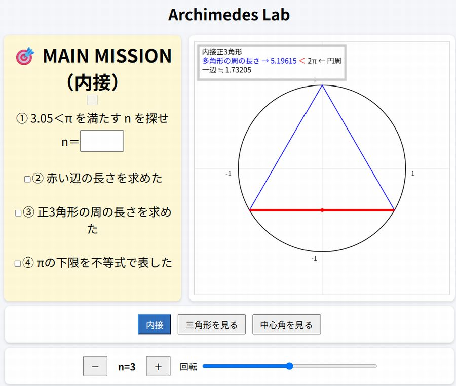
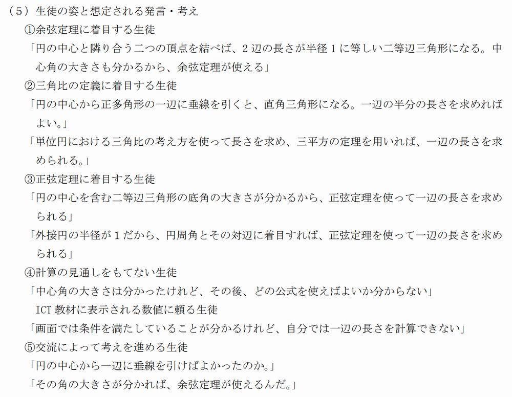

二つの「一体化」を問う
「指導に評価を一体化させる」のか、「指導を評価に一体化させる」のか。言葉の方向から関係を捉え直します。
高校数学に求められる授業改善の視点
SECTION OVERVIEW
授業前に学びの姿を描き、授業後に表れたアウトプットから、教師の働きかけと次の改善を考えます。
「指導に評価を一体化させる」のか、「指導を評価に一体化させる」のか。言葉の方向から関係を捉え直します。
評価問題と期待する生徒のアウトプットという二つの視点から、育てたい資質・能力を授業に具体化します。
授業で生徒に何を語らせたいかを具体的に描き、その反応を引き出すために必要な活動や教師の働きかけを逆向きに考えます。
QUESTION
二つの問いから、普段の授業と評価の関係を考えます。
授業の中で生徒の学びを見取り、その結果を次の指導へ戻す方向。
期待する学びの姿を先に描き、そこから授業の活動や働きかけを逆算する方向。
BACKWARD DESIGN
どのような力を評価問題で問うかによって、授業で生徒に経験させる活動も変わります。
授業後に、どのような言葉、考え、説明が表れてほしいかを描き、問い、活動、支援を逆算します。
TARGET MAPPING
本時の目標を基に、授業者が目標とするアウトプットの位置を設定します。
円に内接する正多角形の特徴に着目し、三角比や正弦定理、余弦定理などの既習事項を関連付けながら、解決方法を選択し、その根拠を説明する力。
着目した図形の特徴と、選択した定義や定理とのつながりを示すとともに、着目する三角形や辺・角によって異なる解決方法を、自分の言葉で説明した記述。
本日の学習指導案より抜粋
FACILITATION
生徒の現在地を捉え、何を問い、何を待ち、どこで支援するかを選択します。
手順を細かく分け、解き方をもう一度示す。必要な場面では有効ですが、いつも同じ対応になっていないでしょうか。
EXPLORATORY LEARNING
デジタル教材を活用し、生徒自身が試行錯誤しながら、図形の特徴や数量の関係を見いだす場面を設定します。
デジタル教材を自ら操作し、変化を確かめながら試行錯誤することで、図形の特徴や数量の関係への気付きを深め、数学的な理解につなげます。

STUDENT RESPONSES
授業で引き出したい生徒の発言や考えを起点に、学習活動と教師の働きかけを捉え直します。
授業で生徒にどのような発言や考えを引き出したいかを、あらかじめ具体的に描きます。期待する生徒の反応を起点として、必要な活動や教師の働きかけを逆向きに考えることが、授業設計の手掛かりになります。
学習指導案から抜粋

本時の授業で生徒に何を語らせたいか、その反応を引き出すために、どのような活動や教師の働きかけを設定するかを考えることが大切です。
このような授業設計を、業務量を増やさず日常的に行うための方法について、今後の学校訪問や研修会を通して、先生方と話し合っていきたいと考えています。